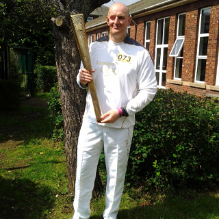
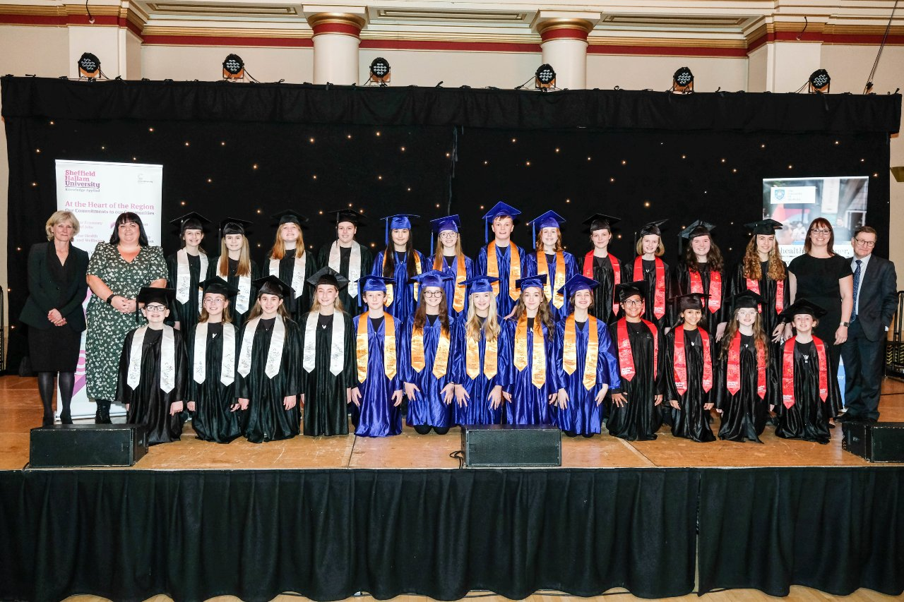

Bill Owen fights for animal rights
Bill Owen took over from Eric Mensforth as Chairman of Governors until 1989.
He was an active trade unionist and became Lord Mayor in 1980.
He persuaded the council on a free vote to bar circuses featuring live animal acts from Sheffield's parks.
He also led campaigns to oppose hare coursing and testing on animals.

We carry the Olympic torch
As part of the 2012 Olympics torch relay, three inspirational sporting champions from the University were
selected to carry the Olympic torch when it
came through Sheffield in June. Student Stephen Birkby, Hallam Union sports officer Colan Leung and
head of Sport Services Dan Porter all took turns carrying the torch through the city, cheered on by thousands
of people.
John Stoddart appointed
John Stoddart was appointed as Principal of Sheffield City Polytechnic.
In the ten years after his appointment, the Polytechnic continued to grow, and he steered it through its
transition to Sheffield Hallam University in 1992.
He is honoured today in the name of the Stoddart Building, home to Sheffield Business School.

Our Students' Union moves into the HUBS
In September 2003 the former National Centre for Popular Music was taken over by Sheffield Hallam Students'
Union to become the HUBS.
Designed by Nigel Coates Architects, the HUBS divided opinion when they opened. The four steel kettles were
voted the world's ugliest building by a 2011 poll.

launch South Yorkshire Children’s University partnership
Hallam joins new food and diet innovation hub to help improve people’s
health

Education Secretary praises Hallam’s ‘innovative’ university-led community
nursery

District mountain rescue teams awarded honorary degree

many online returns end up in landfill – here’s what needs to happen to change
that

Hallam wins Outstanding Contribution to Local Community Award